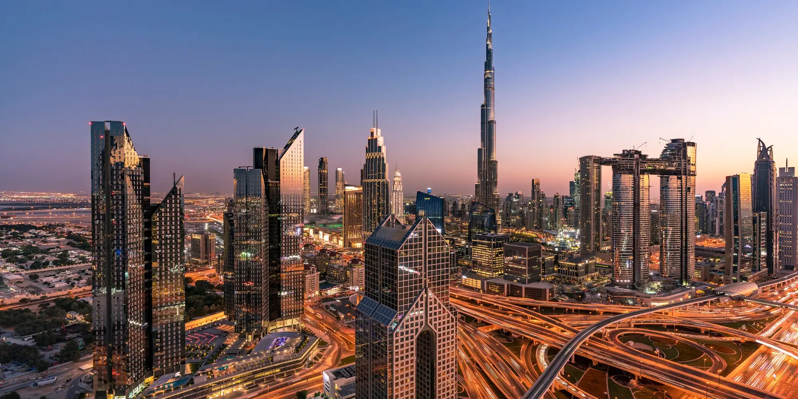
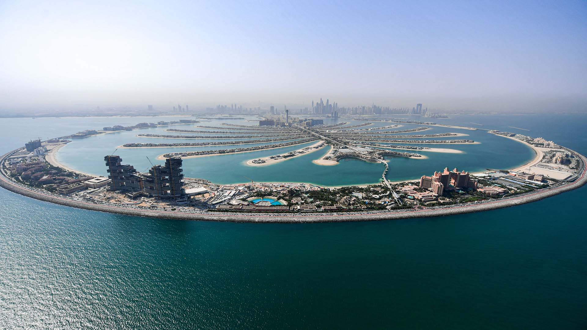

DUBAI

The pearl of the Middle East, Dubai is really worth visiting and you should consider going.
Many people think that Dubai, one of the hotspots of the UAE (United Arab Emirates) is the last place on earth they should travel to. Yet, there is something magnetic about this city that will inevitably draw you to it.
Beautiful, shiny skyscrapers, state of the art buildings and beautiful beaches and sand dunes; fine dining; fabulous all-inclusive accommodation options, shopping at Dubai Mall and adrenaline filled experiences all make Dubai a fantastic tourist destination.
No other place on earth knows development to the same level Dubai and other places in the UAE are experiencing it. This really is a start-up city. At any moment, a new skyscraper is being built and the skyline is always taking a new shape. The best part of it is that since the government is generally involved in the construction of these marvels, you can get in for free.
Consider going on a walk (or a drive) along Sheikh Zayed Road, the main street cutting through Downtown Dubai, to admire the many high-rise modern buildings. This is where you will also find the Dubai World Trade Tower, whose observation deck is a cheaper alternative to Burj Khalifa. Another attraction there is the Gold and Diamond Park – pretty much a mall for jewelries.

